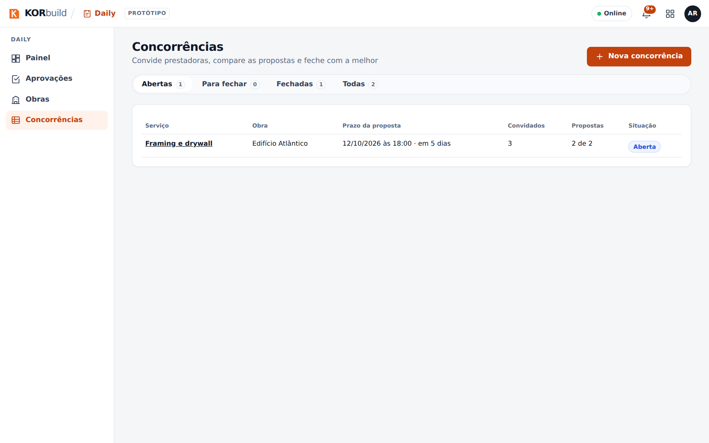

As Concorrências são como uma empresa convida outras para cotar um serviço, compara as propostas e fecha com uma, tudo dentro do KORbuild. Quem contrata é a contratante: uma construtora contratando prestadoras, ou uma prestadora passando parte do serviço dela para outra (quarteirização). As convidadas são prestadoras: com conta no KORbuild, cotam pelo Measure; sem conta, por um link pessoal.
O fechamento é o que liga as duas empresas na obra. Daí em diante, tudo o que já funciona entre empresas passa a valer sozinho: a construtora aprova os diários da prestadora, acompanha a equipe dela na obra (sem valores) e recebe o cronograma publicado (veja Como o KORbuild se organiza).
As concorrências vêm com o plano, como o Settings. Não são um módulo à parte.
Por que importa
- A concorrência inteira num lugar só. Pacote, convites, respostas, perguntas, propostas, comparação e fechamento, sem planilha e troca de e-mails para conciliar.
- Cada empresa só vê o que é dela. A prestadora convidada nunca vê quem mais foi convidado, os valores dos outros nem o valor da vencedora.
- Comparação honesta. Etapa sem preço aparece como não cotada, nunca como zero; exclusão que está no seu escopo incluso é marcada antes de fechar.
- O fechamento cria a ligação da obra. A vencedora cria a obra a partir do projeto ganho, e ela já nasce ligada à sua.
- Um canal que fica. As perguntas da concorrência viram a conversa da obra depois do fechamento. Nada se edita nem se apaga.
Quem participa
| Quem | Onde | O que faz |
|---|---|---|
| Contratante (administrador, gestor de obras) | Daily › Concorrências | Monta o pacote, convida, responde perguntas, compara as propostas e fecha. |
| Prestadora com KORbuild (administrador, orçamentista) | Measure › Convites | Abre o convite, vai cotar ou não, mede num projeto criado a partir dele e envia pela plataforma. |
| Prestadora sem KORbuild | Um link pessoal | Vê o convite, responde, pergunta e manda a proposta em PDF com o total. Não precisa de conta. |
| Contratante de cima | Na concorrência dela | Quando pediu, aprova a empresa que a prestadora dela quer contratar. |
As telas principais
| Tela | O que mostra |
|---|---|
| Concorrências (Daily) | Toda concorrência que a empresa mandou: abertas, para fechar, rascunhos, fechadas, com o prazo e quantas propostas chegaram. |
| Nova concorrência | O pacote: obra, serviço, etapas, escopo incluso e excluso, desenhos, prazo, orçamento, exigências e convidados. |
| A concorrência | Abas Convidados, Perguntas, Comparar e Detalhes; ações Prorrogar, Convidar mais, Cancelar. |
| Convites (Measure) | Os convites que a empresa recebeu, com a contratante e o prazo. |
| O convite | O pacote, Vou cotar / Não vou participar, as perguntas e as suas propostas. |
| A página do link | O mesmo convite, sem login, com o formulário da proposta. |


O caminho de uma concorrência
| Passo | O que acontece |
|---|---|
| 1. Pacote | A contratante descreve o escopo, escolhe as etapas e o prazo, e os convidados nos Contatos. |
| 2. Convites | Cada convidada recebe no KORbuild (com conta) ou por um link pessoal (sem conta). |
| 3. Resposta | Vou cotar cria um projeto no Measure; Não vou participar pode levar um motivo. |
| 4. Perguntas | Pelo canal; cada resposta vai para todas as convidadas (sem dizer quem perguntou) ou só para quem perguntou. |
| 5. Propostas | Enviadas pela plataforma, por etapa. Cada nova é uma revisão; nada se edita. |
| 6. Comparação | Lado a lado, por etapa, com prazo de execução, exclusões e exigências. |
| 7. Fechamento | A concorrência fecha; as outras são avisadas de que não foram escolhidas, sem o valor. |
| 8. Ligação da obra | O projeto da vencedora vira Ganha, a obra dela nasce ligada à sua, e o canal continua. |
Quarteirização
Uma prestadora também pode ser a contratante. Ela cota com as suas prestadoras enquanto orça (a partir do projeto do Measure, usando os preços delas no próprio orçamento) ou depois de ganhar (a partir da obra). Cada elo da cadeia só vê os vizinhos; os valores nunca atravessam um elo. A construtora vê quem está na obra de toda a cadeia, sem valores. Veja o manual do usuário.